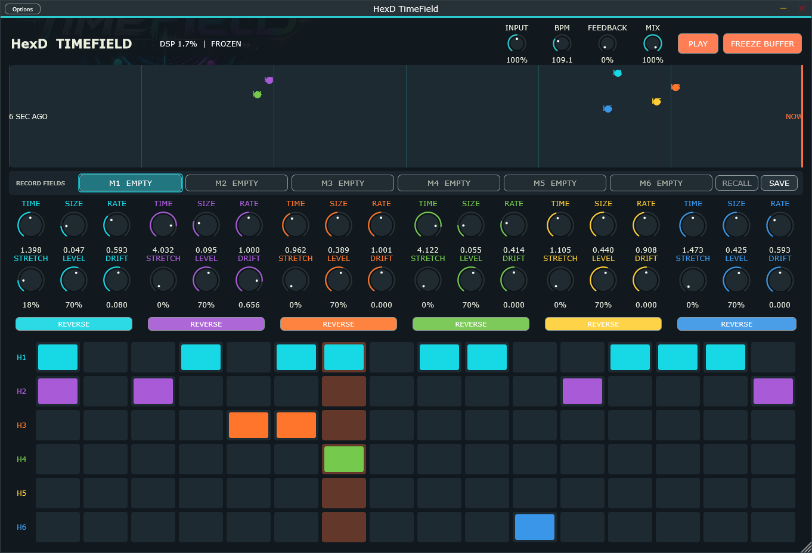

01 Independent software laboratory
TRAVERS
MACMASTER
CREATIVE TOOLS
FOR CREATIVE PEOPLE
Independent developer of experimental audio tools, instruments, apps, games and creative software.
FEATURED / 001HexD TimeField

39.7392° N / 104.9903° W // AUDIO RESEARCH UNIT
02 Current releases
FEATURED TOOLS
Small-batch instruments for sound, motion and strange interaction.
03 Method / motive
BUILT IN THE LAB.
RELEASED INTO THE WILD.
Experimental instruments and creative software built around curiosity, sound, motion, and unusual interaction.
Start a conversation →